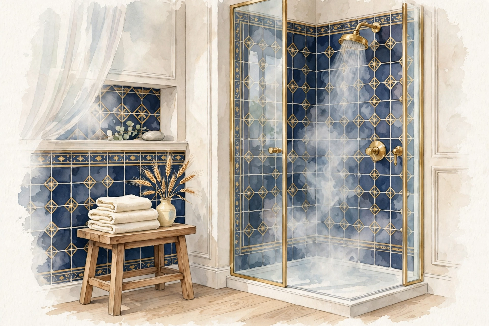

三ノ宮で雨の日の体の重さケア疲れ・だるさ

雨の日の朝は、頭が重くて体全体に鉛が入ったよう。肩も脚もだるくて、やる気まで湿気に吸い取られる気がする。晴れた日との差が大きいほど、「自分の体調管理が悪いのでは」と気になってしまいます。
神戸・三ノ宮の女性専用サロン「ステラスピカ」では、雨の日に出やすい重だるさを、気圧の変化や巡りの滞りと結びつけて見立て、頭・肩・脚を中心にケアします。天候に振り回されにくい体の整え方をご案内します。
雨の日の体の重さはどんな状態か
雨の日は気圧が下がり、体の内外の圧のバランスが変わります。体はその変化に合わせようと働くため、自律神経に負担がかかり、頭の重さやだるさとして感じやすくなると言われます。湿気が高い日は汗が乾きにくく、体の熱や水分の巡りも滞りがちです。
また、雨の日は外出が減って体を動かす量が落ち、同じ姿勢の時間が長くなります。気圧の変化に、運動不足と室内の冷えが重なることで、全身の重だるさが増していくと考えられます。
こんなサインはありませんか？雨の日の重だるさチェック
- 雨の日は朝から頭が重く、すっきり起きられない
- 低気圧が近づくと肩や首が張ってくる
- 雨の日は脚全体が重く、階段が特につらい
- 天気の悪い日はやる気が出ず、横になりたくなる
- 耳の奥がつまったような感じがすることがある
- 梅雨どきは体の重さが何日も続く
- 雨の日は古い不調のある場所がうずく気がする
- 晴れると嘘のように体が軽くなる
雨の日に重だるくなりやすい要因
- 気圧の変化 ― 気圧が下がると体にかかる外からの圧が弱まり、内側とのバランスが変わります。その調整に自律神経が働くぶん、負担として感じやすくなります。
- 湿気と水分の巡り ― 湿度が高い日は汗が蒸発しにくく、体の水分の巡りが滞りがちです。むくみやすさや重さの感じ方と重なります。
- 日照不足と活動量の低下 ― 雨の日は光を浴びる時間が減り、外出も控えめになります。体を動かさない一日は、巡りが落ちて重さが残りやすくなります。
- 室内の冷え ― 梅雨どきは気温が下がり、冷房も入り始めます。素足で過ごす時間が長いと、脚から冷えてだるさにつながります。
- 耳・首まわりの緊張 ― 気圧の変化は耳の奥の感覚とも関わると言われます。違和感から無意識に首や肩に力が入り、張りとして残ることがあります。
- 睡眠の質の低下 ― 湿気と暑さ・冷えが入り混じる夜は眠りが浅くなりやすく、翌日の重だるさを持ち越しやすくなります。
図1｜雨の日に重さを感じやすい頭・肩・脚（正面）

東洋医学から見た考え方
東洋医学では、湿気は「湿（しつ）」と呼ばれる重さの性質を持つものとして考え、体にたまると重だるさや頭の重さとして表れやすいとされます。雨の日の不調は、この湿の影響を受けやすい状態と結びつけて捉えられます。
水分の巡りに関わる脾経や、脚の前面からお腹へ上る胃経は、重だるさと関係づけて考えられる経絡です。当店では脚からお腹、肩、頭へと巡りを意識しながら、全身を順にほぐしていく組み立てを基本にしています。
代表的なツボ
雨の日の重だるさ対策に知っておきたい代表的なツボを3つご紹介します。手と脚にあり、室内でも触りやすい場所です。
膝のお皿の外側下のくぼみから、指4本分ほど下がった、すねの外側にあります。脚のだるさや全身の疲れと関係づけて考えられる代表的なツボです。両手の親指を重ねて、ゆっくり圧をかけてみてください。
膝下の内側、すねの骨の後ろ際を下からなぞって指が止まるくぼみにあります。水分の巡りと関わるツボとされ、脚の重さを感じるときに使いやすい場所です。親指で包むようにゆっくり押してください。
図2｜雨の日の重だるさに関わるツボの位置（正面）
おすすめの施術
おすすめ：オイルマッサージ＋美容整体
雨の日の重だるさには、巡りを意識した全身の流れが向いています。オイルマッサージでは、脚からお腹、肩、頭まわりへと順にほぐし、重さの残りやすい場所を温めながら流します。足三里や陰陵泉など、ツボのある場所も意識しながら進めます。
仕上げの美容整体では、丸まりやすい背中や骨盤の傾きを確認し、巡りが滞りにくい姿勢のバランスを整えます。雨の日の過ごし方の工夫も、状態に合わせてご案内します。
自宅でできるセルフケア
雨の日は外出が減るぶん、室内でできる巡りの工夫が助けになります。重さを感じたタイミングで取り入れてみてください。
- 1. 湯船につかるシャワーで済ませず、ぬるめのお湯にゆっくり浸かります。体を芯から温めると巡りが動きやすくなり、重さの感じ方が変わります。首まで浸かるのがつらい日は、半身浴でも構いません。
- 2. 耳回し・首回し両耳を指でつまみ、ゆっくり前後へ5回ずつ回します。続けて首も大きくゆっくり回すと、頭まわりの張りがゆるみやすくなります。気圧の変化を感じる日の習慣におすすめです。
- 3. 温かい飲み物と軽い食事冷たい飲み物や食べ過ぎは、雨の日の体には負担になりがちです。温かい飲み物をゆっくり取り、食事は腹八分を目安にすると、お腹まわりから巡りが整いやすくなります。
- 4. 部屋の除湿と換気室内の湿度が高いままだと、体の重さも抜けにくくなります。除湿や短時間の換気で空気を入れ替え、過ごす環境側からも整えてみてください。
図3｜湯船で温める・三首を温めるセルフケア
場面別の注意
梅雨どき
何日も雨が続く時期は、重さが日をまたいで蓄積します。晴れ間には短時間でも外を歩き、体を動かす機会を作ることが、梅雨全体の過ごしやすさにつながります。
台風の近づく日
気圧の変化が大きい日は、予定を詰め込みすぎず、温めるケアを早めに取り入れるのがおすすめです。頭の重さを感じたら、無理に我慢せず休む判断も大切です。
雨の日の在宅ワーク
座りっぱなしと室内の冷えが重なります。1時間に一度は立ち上がって歩き、足首を回すなど、室内でも巡りを止めない工夫をしてみてください。
受診の目安
次のような場合は、まず医療機関への受診をご検討ください。
- 頭の重さに加え、強い頭痛や吐き気、見えにくさがある
- 体の重さとともに、むくみが急に強くなった
- 雨の日以外もだるさが続き、日常生活に支障が出ている
- 耳の違和感にめまいや聞こえにくさを伴う
- 発熱や息苦しさを伴っている
当店は医療機関ではなく、診断は行いません。気になる症状がある場合は、施術の前に医療機関でご相談ください。
よくある質問
天気が悪い日だけつらいのですが、相談できますか？
はい。天候と体調の関係はご自身で気づかれている方が多く、雨の日に出やすい場所や感じ方をお聞きしてケアを組み立てます。晴れの日の状態との違いもお伝えください。
雨の日に施術を受けるのは大変ではありませんか？
移動の負担はありますが、施術で温まって巡りが動くと、帰り道の体の軽さが違うという声もあります。足元が悪い日は、無理のない範囲でご来店ください。
自分で気圧の変化に備える方法はありますか？
天気予報で気圧の変化を知り、前の日から睡眠と食事を整えることが備えになります。耳回しや湯船など、感じ始める前に取り入れるケアもおすすめです。
梅雨の間はどのくらいの頻度がよいですか？
状態によりますが、梅雨どきは月2回ほど間隔を詰めて巡りを整える方もいます。季節を通しての通い方は、その都度ご相談ください。
関連するお悩みページ
関連する経絡ページ
ご予約
ステラスピカ（神戸・三ノ宮／女性専用）｜オイルマッサージ・美容整体 90分 10,000円｜月〜土 17:00〜22:00・完全予約制
現在は近日開院予定のため、ご予約の受付はまだ開始していません。開院のご案内までしばらくお待ちください。開院後は、ご予約の際に「雨の日に体が重だるい」とお伝えいただければ、その日の状態に合わせて施術を組み立てます。